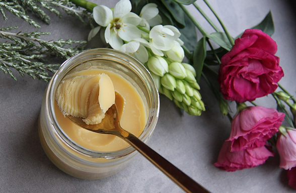
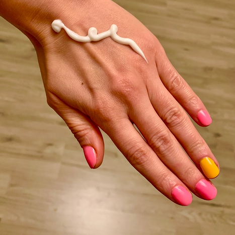
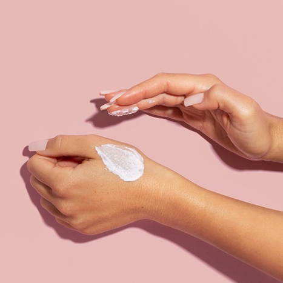
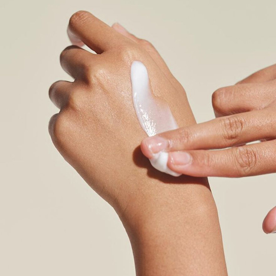
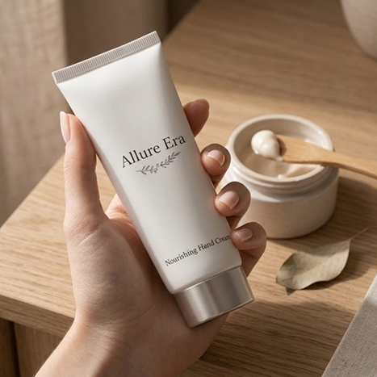
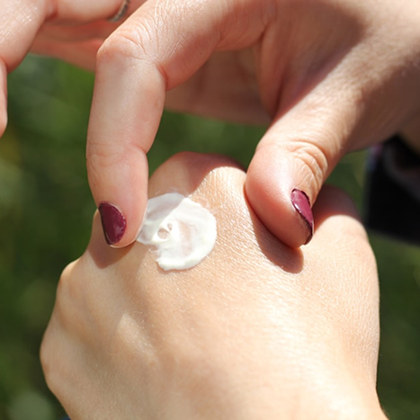
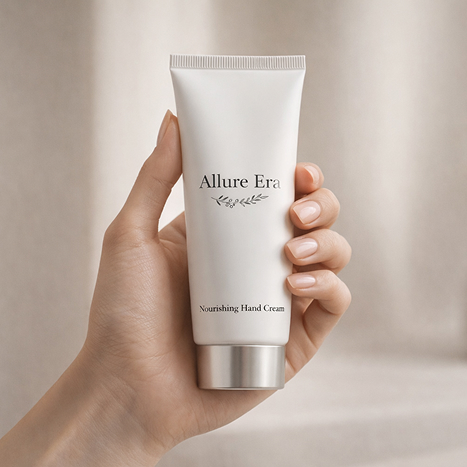
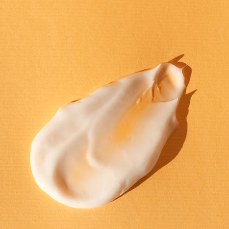

많이 찾는 제품
제품 성분
Rose Velvet
로즈의 부드러운 향과 벨벳 같은 텍스처가 어우러져 손을 감싸는 클래식한 우아함의 완성

| 성분명 | 함량 |
|---|---|
| 정제수 (Water) | 62.00 |
| 글리세린 (Glycerin) | 10.00 |
| 시어버터 (Shea Butter) | 8.00 |
| 호호바씨오일 (Jojoba Seed Oil) | 6.00 |
| 판테놀 (Panthenol) | 4.00 |
| 소듐하이알루로네이트 | 2.00 |
| 샌달우드 오일 | 0.50 |
리뷰
우아한 장미 향에 반했어요



처음 바르는 순간 은은하게 퍼지는 로즈 향이 정말 고급스럽습니다. 인위적인 장미 향이 아니라 자연스럽고 부드러운 느낌이라 더 마음에 들어요. 텍스처도 이름처럼 벨벳처럼 부드럽게 발리면서 끈적임이 거의 없습니다. 손에 흡수된 후에도 촉촉함이 오래 유지되는 점이 특히 좋았습니다. 요즘 자기 전에 꼭 바르는 필수템이 됐어요.
데일리로 쓰기 좋은 고급 핸드크림


패키지부터 굉장히 세련된 느낌이라 선물용으로도 좋을 것 같습니다. 향은 너무 강하지 않고 은은하게 남아서 데일리로 쓰기 부담이 없어요. 발림성도 가볍고 빠르게 흡수되는 타입이라 낮에도 자주 사용하게 됩니다. 다만 건조한 날에는 한 번 더 덧발라야 충분한 보습이 느껴집니다. 그래도 전체적으로 만족도가 높은 제품입니다.
향과 텍스처 모두 만족스러운 제품


처음 바르는 순간 은은하게 퍼지는 로즈 향이 정말 고급스럽습니다. 인위적인 장미 향이 아니라 자연스럽고 부드러운 느낌이라 더 마음에 들어요. 텍스처도 이름처럼 벨벳처럼 부드럽게 발리면서 끈적임이 거의 없습니다. 손에 흡수된 후에도 촉촉함이 오래 유지되는 점이 특히 좋았습니다. 요즘 자기 전에 꼭 바르는 필수템이 됐어요.